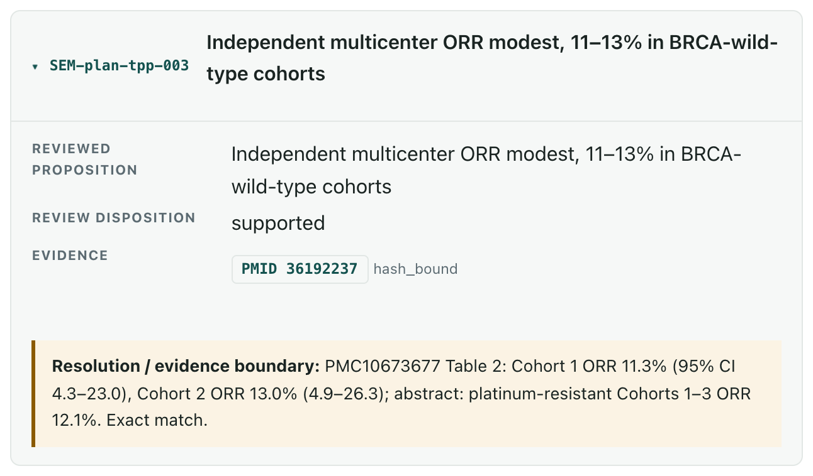

A worked example: prexasertib.
We ran DrugAdopt on prexasertib, a CHK1 inhibitor in platinum-resistant BRCA-wild-type ovarian cancer, using only public data. It produced a full IND-readiness report across the eight modules: mechanism, PK/PD, toxicology, clinical evidence, CMC, protocol, and the gaps that remain.
The mechanism is plausible and the early response rates looked strong. What the analysis found is that the program does not yet rest on a demonstrated tumor vulnerability. The figures below are how it got there.
Five figures from the report.



The conclusion
What the report concluded.
CHK1 is a candidate vulnerability in this population and the biology is coherent, but public evidence does not establish a measurable, load-bearing tumor CHK1-dependence mechanism, and no public biomarker supports patient selection today.
Nine rows, each with the experiment that would close it: tumor PK and a validated pathway-PD readout for the exposure gap, a frozen replication-stress score tested in an independent cohort for the resistance gap, biomarker enrichment or a randomized comparison before any unselected monotherapy path.